Kaynak: dürüst F1 koşusu (eğitim dilimi, düzeltilmiş zaman damgası, OPEN-41, boşluklu stop), 20 sembol, 10.000 $ başlangıç. Net -8,649 $, 3565 işlem, kazanan 1898 (%53.2). Parmak izi 53adb0b69c4248f9 · spec v0.5 · kod 6b4b93e+kirli. Seçim: R'ye göre en kötü 10 kaybeden, rastgele 10 kaybeden, rastgele 10 kazanan (tohum 20261001). R = net PnL / (giriş miktarı × |giriş − 1 çapası|). Notlar bu tarayıcıda saklanır; “Notları indir” numaralı listeyi notlar.md olarak verir.
| Sembol (TradingView) | XRPUSDT BingX perpetual |
|---|---|
| Zaman dilimi | zone 30m · giriş/çıkış 1m |
| Giriş | 2026-01-29 14:27 UTC · 2026-01-29 17:27 TR · 1.87196 |
| Çıkış | 2026-01-29 14:30 UTC · 2026-01-29 17:30 TR · 1.85293 · STOP |
| Sonuç | -2.92 R · fiyat -1.02% · net -7.99 $ (10.000 $ hesap) |
| Çapalar | 0: 1.8882 (2026-01-29 06:30 UTC) · 1: 1.865 (2026-01-29 12:30 UTC) |
| Fib | 0.50: 1.8766 · 0.70: 1.87196 · 0.79: 1.86987 |
| Girişte bantta |
|
| Zone | c5a73adb30925a1caa7975423a523026 |
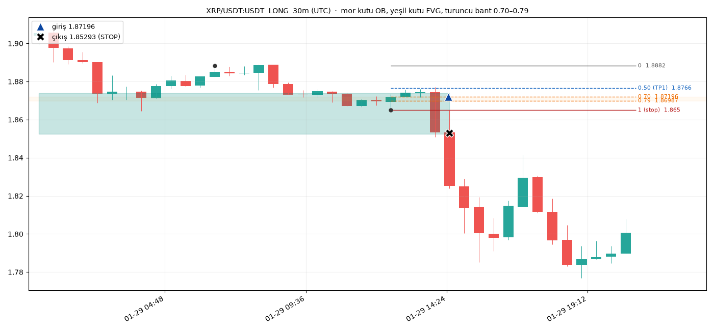
| Sembol (TradingView) | SUIUSDT BingX perpetual |
|---|---|
| Zaman dilimi | zone 30m · giriş/çıkış 1m |
| Giriş | 2025-10-28 05:31 UTC · 2025-10-28 08:31 TR · 2.59834 |
| Çıkış | 2025-10-28 05:46 UTC · 2025-10-28 08:46 TR · 2.55979 · STOP |
| Sonuç | -2.81 R · fiyat -1.48% · net -23.96 $ (10.000 $ hesap) |
| Çapalar | 0: 2.6318 (2025-10-28 01:30 UTC) · 1: 2.584 (2025-10-28 02:30 UTC) |
| Fib | 0.50: 2.6079 · 0.70: 2.59834 · 0.79: 2.59404 |
| Girişte bantta |
|
| Zone | 9b4c081d4c345603ba30fa3bd2d24285 |
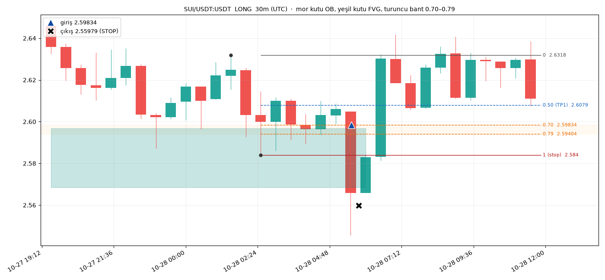
| Sembol (TradingView) | BTCUSDT BingX perpetual |
|---|---|
| Zaman dilimi | zone 30m · giriş/çıkış 1m |
| Giriş | 2025-12-27 05:37 UTC · 2025-12-27 08:37 TR · 87447.6 |
| Çıkış | 2025-12-27 06:10 UTC · 2025-12-27 09:10 TR · 87515.7 · STOP |
| Sonuç | -2.75 R · fiyat -0.08% · net -1.48 $ (10.000 $ hesap) |
| Çapalar | 0: 87337.8 (2025-12-27 03:00 UTC) · 1: 87494.6 (2025-12-27 03:30 UTC) |
| Fib | 0.50: 87416.2 · 0.70: 87447.6 · 0.79: 87461.7 |
| Girişte bantta |
|
| Zone | a546c87458f55f9db7dd9b44fc432e52 |
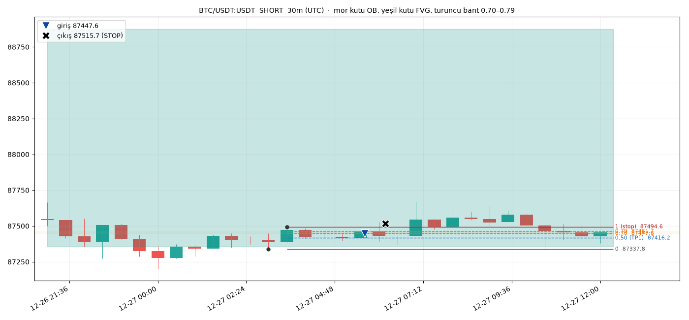
| Sembol (TradingView) | BTCUSDT BingX perpetual |
|---|---|
| Zaman dilimi | zone 30m · giriş/çıkış 1m |
| Giriş | 2026-03-29 22:02 UTC · 2026-03-30 01:02 TR · 66373.7 |
| Çıkış | 2026-03-29 22:42 UTC · 2026-03-30 01:42 TR · 65785.7 · STOP |
| Sonuç | -2.59 R · fiyat -0.89% · net -4.25 $ (10.000 $ hesap) |
| Çapalar | 0: 66945.9 (2026-03-29 11:30 UTC) · 1: 66128.5 (2026-03-29 17:00 UTC) |
| Fib | 0.50: 66537.2 · 0.70: 66373.7 · 0.79: 66300.2 |
| Girişte bantta |
|
| Zone | 7bd87dbf170259c8858955413c35a4ca |
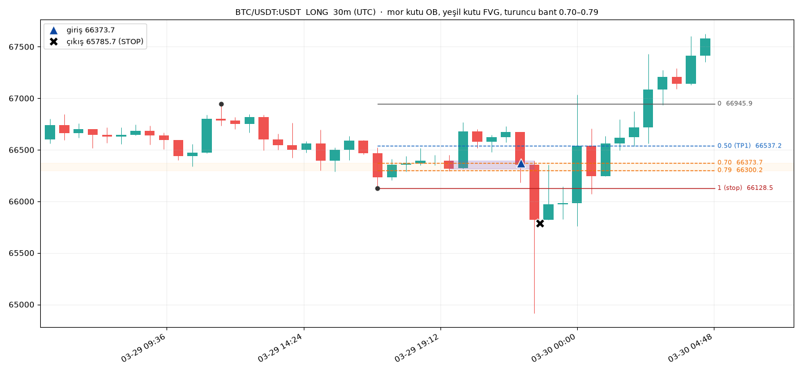
| Sembol (TradingView) | UNIUSDT BingX perpetual |
|---|---|
| Zaman dilimi | zone 30m · giriş/çıkış 1m |
| Giriş | 2025-12-09 15:01 UTC · 2025-12-09 18:01 TR · 5.5172 |
| Çıkış | 2025-12-09 15:03 UTC · 2025-12-09 18:03 TR · 5.60312 · STOP |
| Sonuç | -2.58 R · fiyat -1.56% · net -15.73 $ (10.000 $ hesap) |
| Çapalar | 0: 5.436 (2025-12-09 09:30 UTC) · 1: 5.552 (2025-12-09 13:30 UTC) |
| Fib | 0.50: 5.494 · 0.70: 5.5172 · 0.79: 5.52764 |
| Girişte bantta |
|
| Zone | 10bf28051a325a1eaec00639cb969f30 |
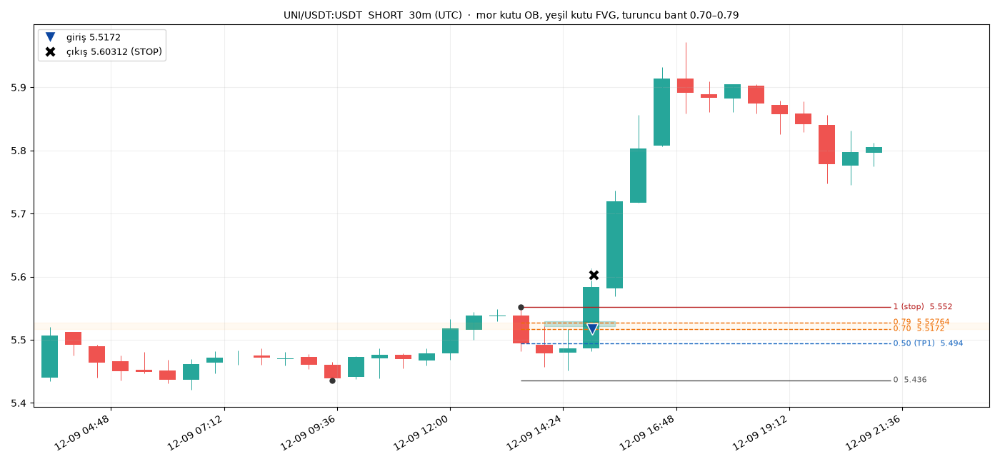
| Sembol (TradingView) | ORDIUSDT BingX perpetual |
|---|---|
| Zaman dilimi | zone 30m · giriş/çıkış 1m |
| Giriş | 2025-10-16 09:33 UTC · 2025-10-16 12:33 TR · 5.3166 |
| Çıkış | 2025-10-16 09:35 UTC · 2025-10-16 12:35 TR · 5.16497 · STOP |
| Sonuç | -2.44 R · fiyat -2.85% · net -45.42 $ (10.000 $ hesap) |
| Çapalar | 0: 5.465 (2025-10-15 18:30 UTC) · 1: 5.253 (2025-10-15 20:30 UTC) |
| Fib | 0.50: 5.359 · 0.70: 5.3166 · 0.79: 5.29752 |
| Girişte bantta |
|
| Zone | 0e6337e2f8175ed2a492b74a3d555218 |
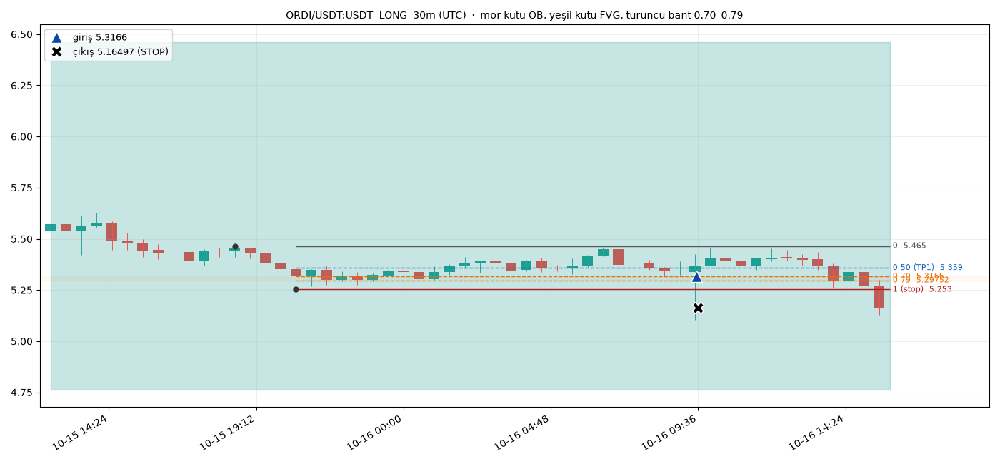
| Sembol (TradingView) | XRPUSDT BingX perpetual |
|---|---|
| Zaman dilimi | zone 30m · giriş/çıkış 1m |
| Giriş | 2026-01-02 09:11 UTC · 2026-01-02 12:11 TR · 1.88458 |
| Çıkış | 2026-01-02 09:50 UTC · 2026-01-02 12:50 TR · 1.90038 · STOP |
| Sonuç | -2.44 R · fiyat -0.84% · net -8.90 $ (10.000 $ hesap) |
| Çapalar | 0: 1.8682 (2026-01-02 02:00 UTC) · 1: 1.8916 (2026-01-02 03:30 UTC) |
| Fib | 0.50: 1.8799 · 0.70: 1.88458 · 0.79: 1.88669 |
| Girişte bantta |
|
| Zone | b7dff40a579f5801a661c9734542b237 |
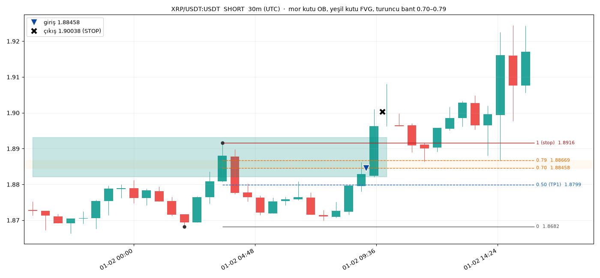
| Sembol (TradingView) | ORDIUSDT BingX perpetual |
|---|---|
| Zaman dilimi | zone 30m · giriş/çıkış 1m |
| Giriş | 2026-02-23 01:01 UTC · 2026-02-23 04:01 TR · 2.4616 |
| Çıkış | 2026-02-23 01:03 UTC · 2026-02-23 04:03 TR · 2.39652 · STOP |
| Sonuç | -2.42 R · fiyat -2.64% · net -16.63 $ (10.000 $ hesap) |
| Çapalar | 0: 2.526 (2026-02-22 17:00 UTC) · 1: 2.434 (2026-02-22 22:00 UTC) |
| Fib | 0.50: 2.48 · 0.70: 2.4616 · 0.79: 2.45332 |
| Girişte bantta |
|
| Zone | 08154a1e0df15cdea7d92fe98f2d33aa |
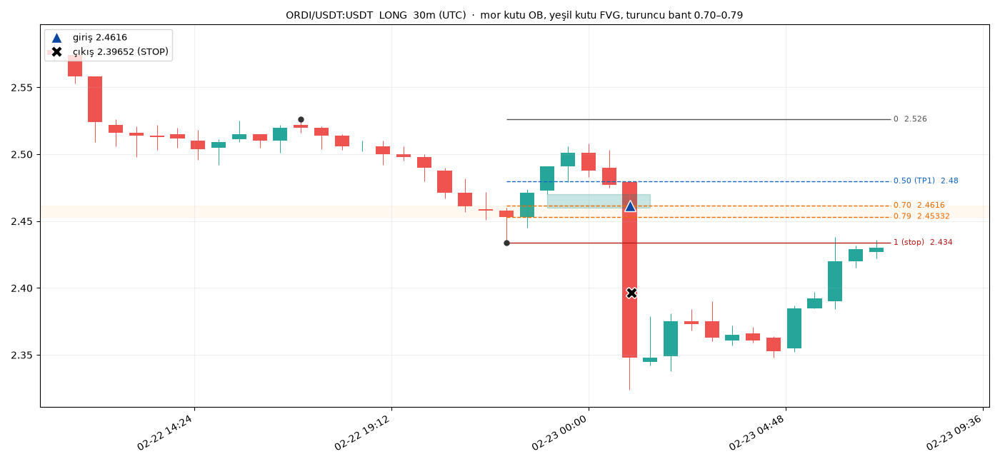
| Sembol (TradingView) | NEARUSDT BingX perpetual |
|---|---|
| Zaman dilimi | zone 30m · giriş/çıkış 1m |
| Giriş | 2026-03-30 00:17 UTC · 2026-03-30 03:17 TR · 1.1672 |
| Çıkış | 2026-03-30 00:20 UTC · 2026-03-30 03:20 TR · 1.18524 · STOP |
| Sonuç | -2.42 R · fiyat -1.55% · net -7.09 $ (10.000 $ hesap) |
| Çapalar | 0: 1.149 (2026-03-29 17:00 UTC) · 1: 1.175 (2026-03-29 21:30 UTC) |
| Fib | 0.50: 1.162 · 0.70: 1.1672 · 0.79: 1.16954 |
| Girişte bantta |
|
| Zone | 706d6da75f0a5459b1f33074b284b2fa |
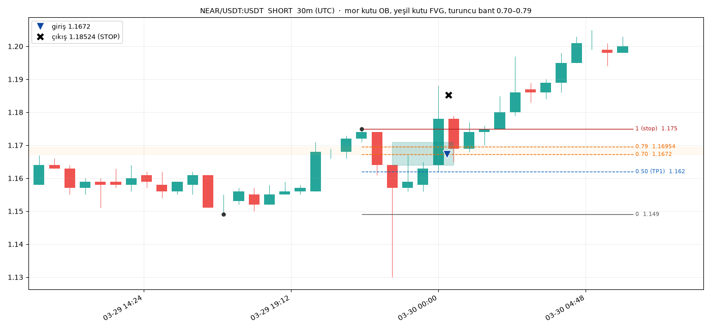
| Sembol (TradingView) | BNBUSDT BingX perpetual |
|---|---|
| Zaman dilimi | zone 30m · giriş/çıkış 1m |
| Giriş | 2025-12-27 05:45 UTC · 2025-12-27 08:45 TR · 835.626 |
| Çıkış | 2025-12-27 05:53 UTC · 2025-12-27 08:53 TR · 836.527 · STOP |
| Sonuç | -2.38 R · fiyat -0.11% · net -1.78 $ (10.000 $ hesap) |
| Çapalar | 0: 834.17 (2025-12-27 02:00 UTC) · 1: 836.25 (2025-12-27 04:00 UTC) |
| Fib | 0.50: 835.21 · 0.70: 835.626 · 0.79: 835.813 |
| Girişte bantta |
|
| Zone | 5124969eed1b55e48141af78c3a3919a |
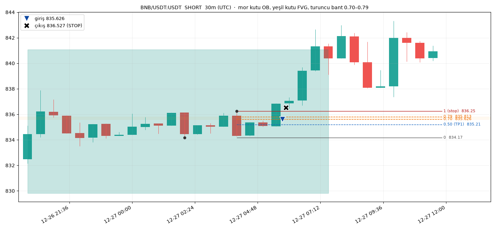
| Sembol (TradingView) | CRVUSDT BingX perpetual |
|---|---|
| Zaman dilimi | zone 30m · giriş/çıkış 1m |
| Giriş | 2026-01-05 10:28 UTC · 2026-01-05 13:28 TR · 0.42357 |
| Çıkış | 2026-01-05 11:35 UTC · 2026-01-05 14:35 TR · 0.418416 · STOP |
| Sonuç | -1.22 R · fiyat -1.22% · net -12.34 $ (10.000 $ hesap) |
| Çapalar | 0: 0.434 (2026-01-05 01:30 UTC) · 1: 0.4191 (2026-01-05 04:30 UTC) |
| Fib | 0.50: 0.42655 · 0.70: 0.42357 · 0.79: 0.422229 |
| Girişte bantta |
|
| Zone | cfff85f90d955bf2b7400a4c9b775631 |
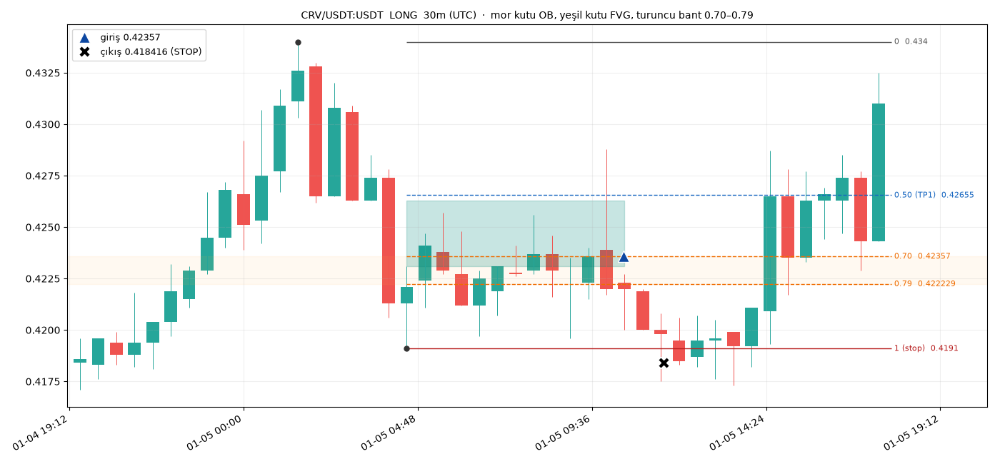
| Sembol (TradingView) | SOLUSDT BingX perpetual |
|---|---|
| Zaman dilimi | zone 30m · giriş/çıkış 1m |
| Giriş | 2026-02-13 06:58 UTC · 2026-02-13 09:58 TR · 78.5638 |
| Çıkış | 2026-02-13 08:46 UTC · 2026-02-13 11:46 TR · 79.5129 · STOP |
| Sonuç | -1.16 R · fiyat -1.21% · net -8.79 $ (10.000 $ hesap) |
| Çapalar | 0: 76.545 (2026-02-12 20:30 UTC) · 1: 79.429 (2026-02-13 03:30 UTC) |
| Fib | 0.50: 77.987 · 0.70: 78.5638 · 0.79: 78.8234 |
| Girişte bantta |
|
| Zone | d5323dd7e5105f398e6469dbeb67d8c5 |
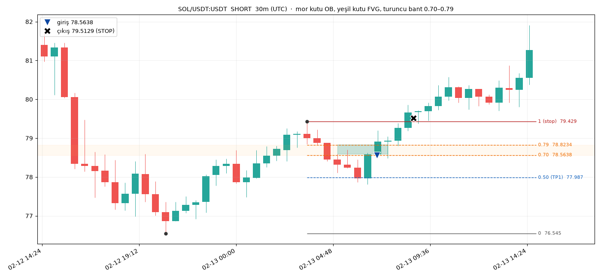
| Sembol (TradingView) | ORDIUSDT BingX perpetual |
|---|---|
| Zaman dilimi | zone 30m · giriş/çıkış 1m |
| Giriş | 2025-10-18 01:03 UTC · 2025-10-18 04:03 TR · 4.996 |
| Çıkış | 2025-10-18 01:25 UTC · 2025-10-18 04:25 TR · 5.03701 · STOP |
| Sonuç | -1.14 R · fiyat -0.82% · net -14.09 $ (10.000 $ hesap) |
| Çapalar | 0: 4.905 (2025-10-17 19:30 UTC) · 1: 5.035 (2025-10-17 21:00 UTC) |
| Fib | 0.50: 4.97 · 0.70: 4.996 · 0.79: 5.0077 |
| Girişte bantta |
|
| Zone | e2db3d7c95ff5654a4cf7c4708da8ee9 |
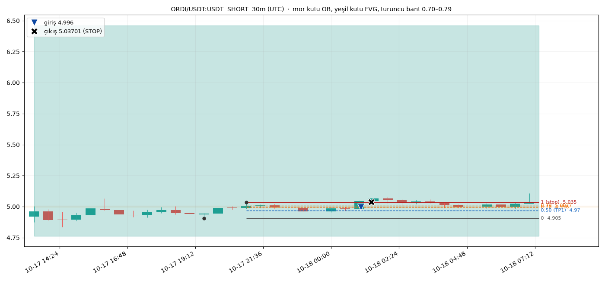
| Sembol (TradingView) | BNBUSDT BingX perpetual |
|---|---|
| Zaman dilimi | zone 30m · giriş/çıkış 1m |
| Giriş | 2026-02-14 08:01 UTC · 2026-02-14 11:01 TR · 622.418 |
| Çıkış | 2026-02-14 08:35 UTC · 2026-02-14 11:35 TR · 625.205 · STOP |
| Sonuç | -1.07 R · fiyat -0.45% · net -3.53 $ (10.000 $ hesap) |
| Çapalar | 0: 615.39 (2026-02-13 20:00 UTC) · 1: 625.43 (2026-02-14 01:30 UTC) |
| Fib | 0.50: 620.41 · 0.70: 622.418 · 0.79: 623.322 |
| Girişte bantta |
|
| Zone | cf88d5123cbf5f4a8dba498ec3689b5c |
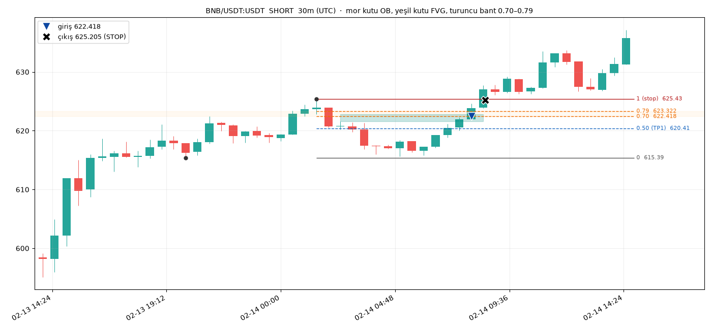
| Sembol (TradingView) | AVAXUSDT BingX perpetual |
|---|---|
| Zaman dilimi | zone 30m · giriş/çıkış 1m |
| Giriş | 2025-09-23 14:07 UTC · 2025-09-23 17:07 TR · 34.8549 |
| Çıkış | 2025-09-23 15:13 UTC · 2025-09-23 18:13 TR · 35.7732 · STOP |
| Sonuç | -1.05 R · fiyat -2.63% · net -52.10 $ (10.000 $ hesap) |
| Çapalar | 0: 32.75 (2025-09-23 03:00 UTC) · 1: 35.757 (2025-09-23 03:30 UTC) |
| Fib | 0.50: 34.2535 · 0.70: 34.8549 · 0.79: 35.1255 |
| Girişte bantta |
|
| Zone | a520913fe1805a5ea9f27657e5b4c72e |
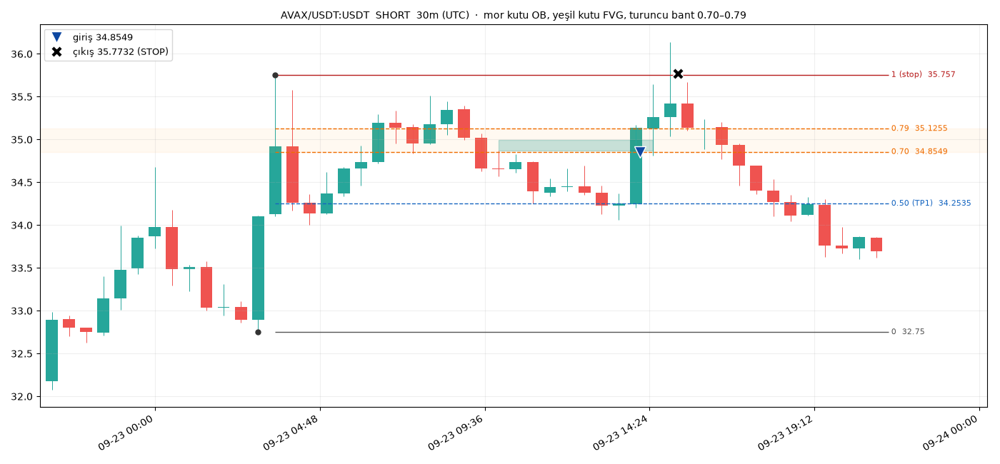
| Sembol (TradingView) | XRPUSDT BingX perpetual |
|---|---|
| Zaman dilimi | zone 30m · giriş/çıkış 1m |
| Giriş | 2025-10-05 16:45 UTC · 2025-10-05 19:45 TR · 2.99653 |
| Çıkış | 2025-10-05 16:52 UTC · 2025-10-05 19:52 TR · 2.9877 · STOP |
| Sonuç | -0.96 R · fiyat -0.29% · net -6.14 $ (10.000 $ hesap) |
| Çapalar | 0: 3.0232 (2025-10-05 11:30 UTC) · 1: 2.9851 (2025-10-05 14:30 UTC) |
| Fib | 0.50: 3.00415 · 0.70: 2.99653 · 0.79: 2.9931 |
| Girişte bantta |
|
| Zone | de1c765446f45a318e2a71747f716cbd |
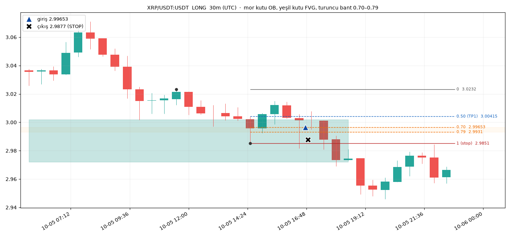
| Sembol (TradingView) | ORDIUSDT BingX perpetual |
|---|---|
| Zaman dilimi | zone 30m · giriş/çıkış 1m |
| Giriş | 2025-10-25 17:12 UTC · 2025-10-25 20:12 TR · 5.2336 |
| Çıkış | 2025-10-25 18:41 UTC · 2025-10-25 21:41 TR · 5.28106 · STOP |
| Sonuç | -1.01 R · fiyat -0.91% · net -16.22 $ (10.000 $ hesap) |
| Çapalar | 0: 5.116 (2025-10-24 14:00 UTC) · 1: 5.284 (2025-10-24 22:30 UTC) |
| Fib | 0.50: 5.2 · 0.70: 5.2336 · 0.79: 5.24872 |
| Girişte bantta |
|
| Zone | 4da0608c36a15b8381b3e0f67e0443d0 |
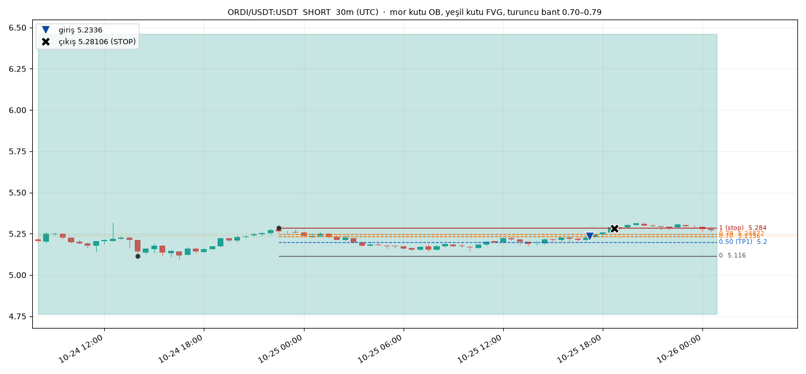
| Sembol (TradingView) | DOGEUSDT BingX perpetual |
|---|---|
| Zaman dilimi | zone 30m · giriş/çıkış 1m |
| Giriş | 2025-09-03 01:54 UTC · 2025-09-03 04:54 TR · 0.213749 |
| Çıkış | 2025-09-03 02:01 UTC · 2025-09-03 05:01 TR · 0.215583 · STOP |
| Sonuç | -1.13 R · fiyat -0.86% · net -19.94 $ (10.000 $ hesap) |
| Çapalar | 0: 0.20964 (2025-09-02 18:30 UTC) · 1: 0.21551 (2025-09-02 21:30 UTC) |
| Fib | 0.50: 0.212575 · 0.70: 0.213749 · 0.79: 0.214277 |
| Girişte bantta |
|
| Zone | e2dc1d907d9d51bc9f62a8c59d45f073 |
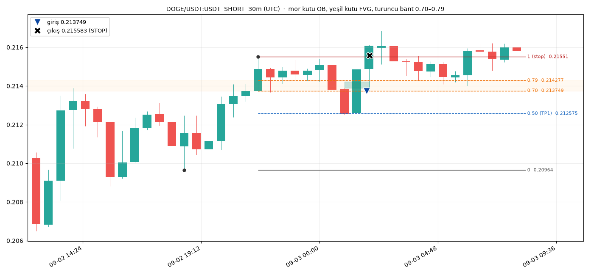
| Sembol (TradingView) | RUNEUSDT BingX perpetual |
|---|---|
| Zaman dilimi | zone 30m · giriş/çıkış 1m |
| Giriş | 2025-10-18 06:06 UTC · 2025-10-18 09:06 TR · 0.8448 |
| Çıkış | 2025-10-18 07:04 UTC · 2025-10-18 10:04 TR · 0.84917 · STOP |
| Sonuç | -0.30 R · fiyat -0.52% · net -2.34 $ (10.000 $ hesap) |
| Çapalar | 0: 0.835 (2025-10-18 00:00 UTC) · 1: 0.849 (2025-10-18 02:00 UTC) |
| Fib | 0.50: 0.842 · 0.70: 0.8448 · 0.79: 0.84606 |
| Girişte bantta |
|
| Zone | 8538633545e153de8c4f0f790b9f7494 |
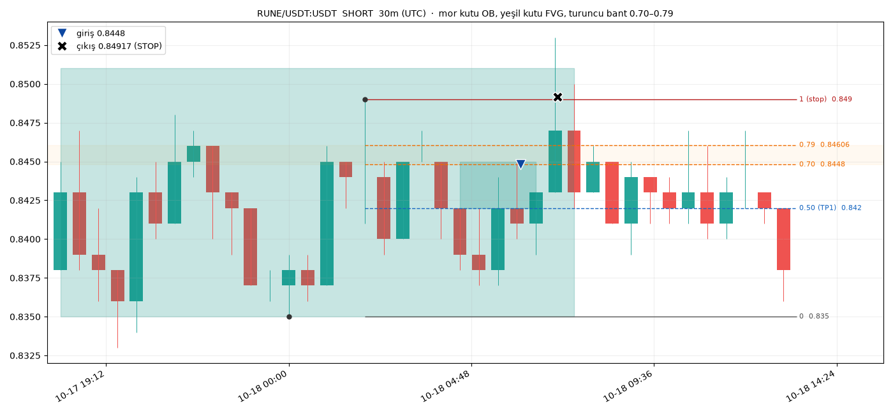
| Sembol (TradingView) | BNBUSDT BingX perpetual |
|---|---|
| Zaman dilimi | zone 30m · giriş/çıkış 1m |
| Giriş | 2026-01-23 00:10 UTC · 2026-01-23 03:10 TR · 888.734 |
| Çıkış | 2026-01-23 01:55 UTC · 2026-01-23 04:55 TR · 891.478 · STOP |
| Sonuç | -1.33 R · fiyat -0.31% · net -2.97 $ (10.000 $ hesap) |
| Çapalar | 0: 882.84 (2026-01-22 19:00 UTC) · 1: 891.26 (2026-01-22 22:00 UTC) |
| Fib | 0.50: 887.05 · 0.70: 888.734 · 0.79: 889.492 |
| Girişte bantta |
|
| Zone | 3c7edc6ae0ac54dd988dd03eafc404a1 |
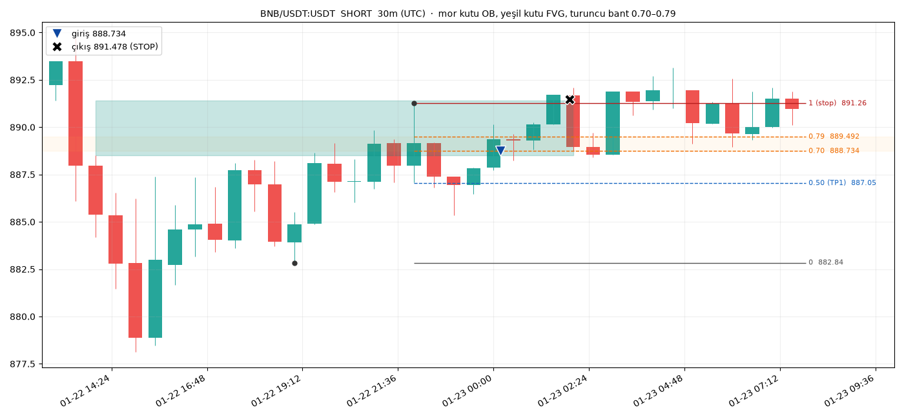
| Sembol (TradingView) | JUPUSDT BingX perpetual |
|---|---|
| Zaman dilimi | zone 30m · giriş/çıkış 1m |
| Giriş | 2026-01-30 14:09 UTC · 2026-01-30 17:09 TR · 0.20283 |
| Çıkış | 2026-01-30 15:36 UTC · 2026-01-30 18:36 TR · 0.203341 · BREAKEVEN |
| Sonuç | +0.24 R · fiyat -0.25% · net +3.20 $ (10.000 $ hesap) |
| Çapalar | 0: 0.1938 (2026-01-30 09:00 UTC) · 1: 0.2067 (2026-01-30 11:30 UTC) |
| Fib | 0.50: 0.20025 · 0.70: 0.20283 · 0.79: 0.203991 |
| Girişte bantta |
|
| Zone | 549457b8811e5483ab51a227a612c094 |
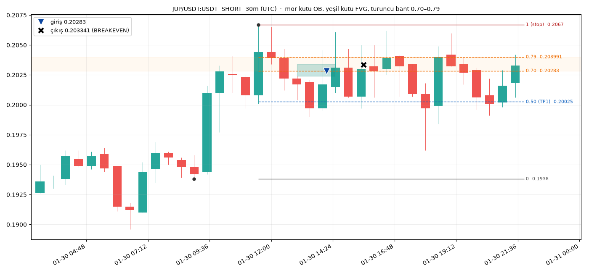
| Sembol (TradingView) | RUNEUSDT BingX perpetual |
|---|---|
| Zaman dilimi | zone 30m · giriş/çıkış 1m |
| Giriş | 2025-09-18 22:20 UTC · 2025-09-19 01:20 TR · 1.3649 |
| Çıkış | 2025-09-18 23:06 UTC · 2025-09-19 02:06 TR · 1.353 · FINAL_TP |
| Sonuç | +1.39 R · fiyat +0.87% · net +10.68 $ (10.000 $ hesap) |
| Çapalar | 0: 1.353 (2025-09-18 19:30 UTC) · 1: 1.37 (2025-09-18 20:30 UTC) |
| Fib | 0.50: 1.3615 · 0.70: 1.3649 · 0.79: 1.36643 |
| Girişte bantta |
|
| Zone | ebe78bbcaae454feaf2bf885c687f67b |
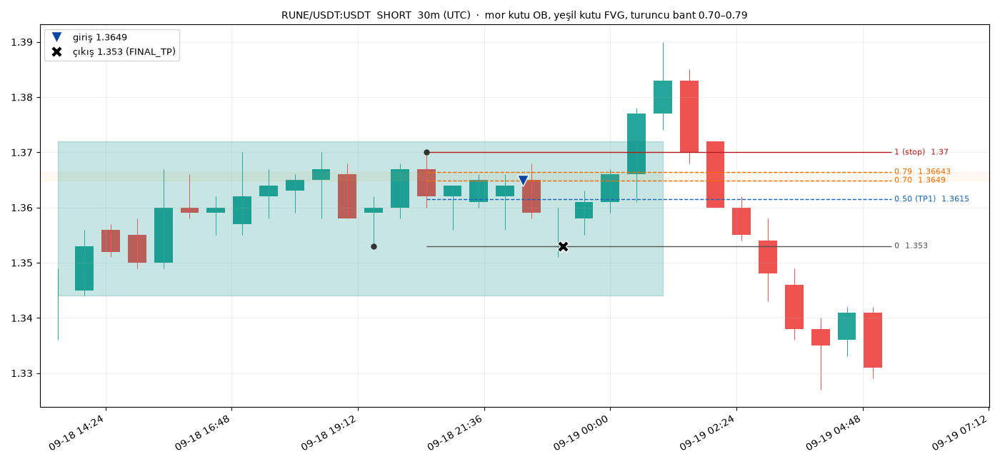
| Sembol (TradingView) | INJUSDT BingX perpetual |
|---|---|
| Zaman dilimi | zone 30m · giriş/çıkış 1m |
| Giriş | 2025-10-06 00:03 UTC · 2025-10-06 03:03 TR · 12.6217 |
| Çıkış | 2025-10-06 00:22 UTC · 2025-10-06 03:22 TR · 12.901 · FINAL_TP |
| Sonuç | +1.46 R · fiyat +2.21% · net +23.18 $ (10.000 $ hesap) |
| Çapalar | 0: 12.901 (2025-10-05 14:00 UTC) · 1: 12.502 (2025-10-05 20:00 UTC) |
| Fib | 0.50: 12.7015 · 0.70: 12.6217 · 0.79: 12.5858 |
| Girişte bantta |
|
| Zone | 18d50788818c5206ba33206156ef7b8b |
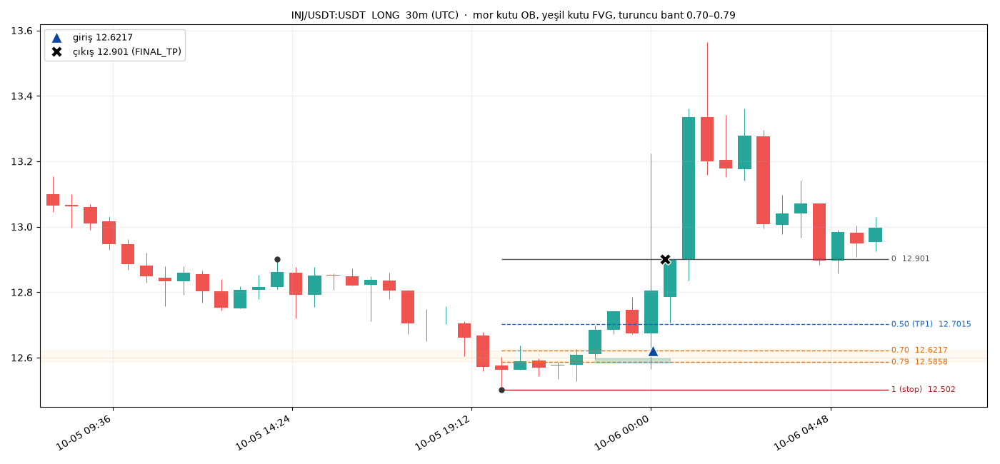
| Sembol (TradingView) | BTCUSDT BingX perpetual |
|---|---|
| Zaman dilimi | zone 30m · giriş/çıkış 1m |
| Giriş | 2026-03-26 14:19 UTC · 2026-03-26 17:19 TR · 69446 |
| Çıkış | 2026-03-26 14:44 UTC · 2026-03-26 17:44 TR · 69509.7 · BREAKEVEN |
| Sonuç | +0.31 R · fiyat +0.09% · net +0.58 $ (10.000 $ hesap) |
| Çapalar | 0: 70113.2 (2026-03-26 09:00 UTC) · 1: 69160 (2026-03-26 11:00 UTC) |
| Fib | 0.50: 69636.6 · 0.70: 69446 · 0.79: 69360.2 |
| Girişte bantta |
|
| Zone | f1e6b9183fab5253aa3a9b268ce03035 |
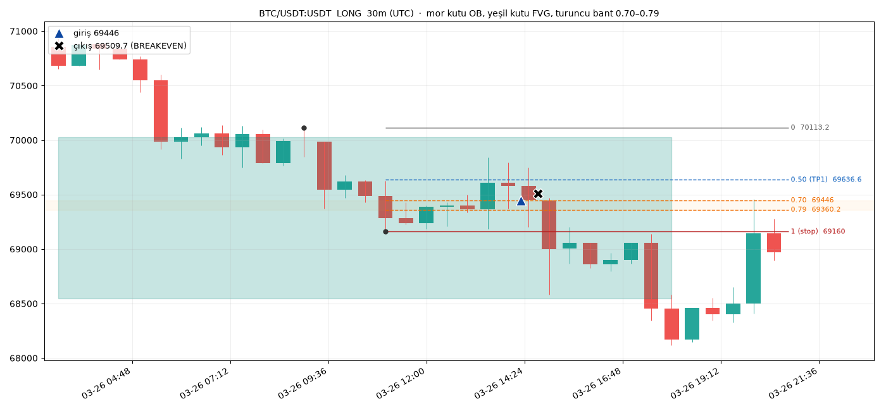
| Sembol (TradingView) | BNBUSDT BingX perpetual |
|---|---|
| Zaman dilimi | zone 30m · giriş/çıkış 1m |
| Giriş | 2026-03-12 15:39 UTC · 2026-03-12 18:39 TR · 652.646 |
| Çıkış | 2026-03-12 16:22 UTC · 2026-03-12 19:22 TR · 652.4 · BREAKEVEN |
| Sonuç | +0.29 R · fiyat +0.04% · net +1.17 $ (10.000 $ hesap) |
| Çapalar | 0: 641.39 (2026-03-12 04:30 UTC) · 1: 657.47 (2026-03-12 12:30 UTC) |
| Fib | 0.50: 649.43 · 0.70: 652.646 · 0.79: 654.093 |
| Girişte bantta |
|
| Zone | b7d5ddf18c2b523a999ee4435a756a2a |
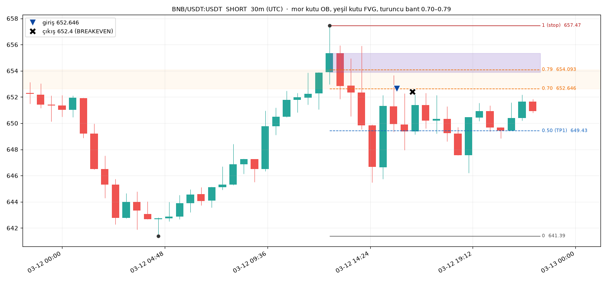
| Sembol (TradingView) | SOLUSDT BingX perpetual |
|---|---|
| Zaman dilimi | zone 30m · giriş/çıkış 1m |
| Giriş | 2025-08-23 20:57 UTC · 2025-08-23 23:57 TR · 203.931 |
| Çıkış | 2025-08-23 22:59 UTC · 2025-08-24 01:59 TR · 203.722 · BREAKEVEN |
| Sonuç | +0.32 R · fiyat +0.10% · net +2.44 $ (10.000 $ hesap) |
| Çapalar | 0: 202.308 (2025-08-23 16:00 UTC) · 1: 204.627 (2025-08-23 19:00 UTC) |
| Fib | 0.50: 203.468 · 0.70: 203.931 · 0.79: 204.14 |
| Girişte bantta |
|
| Zone | 1eb5542df6a85fffb28f78449cb7094e |
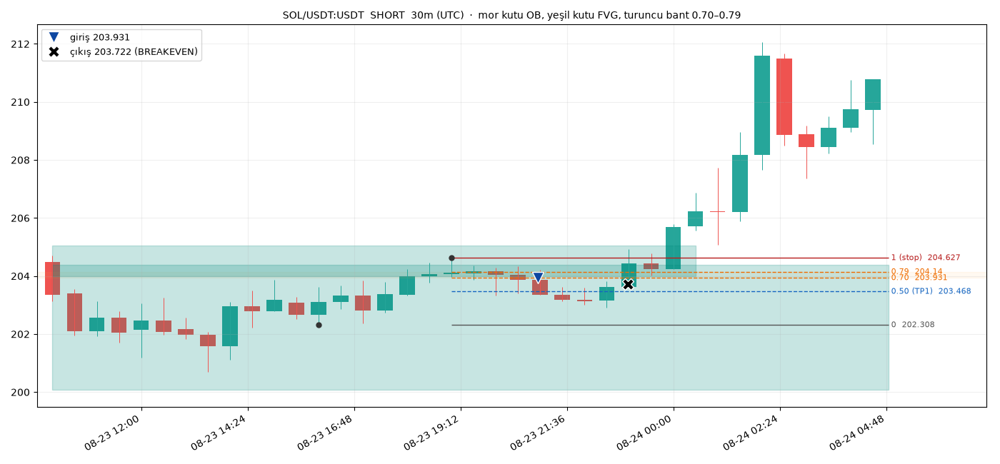
| Sembol (TradingView) | BNBUSDT BingX perpetual |
|---|---|
| Zaman dilimi | zone 30m · giriş/çıkış 1m |
| Giriş | 2026-02-26 14:07 UTC · 2026-02-26 17:07 TR · 625.068 |
| Çıkış | 2026-02-26 14:31 UTC · 2026-02-26 17:31 TR · 625.905 · BREAKEVEN |
| Sonuç | +0.37 R · fiyat +0.13% · net +0.75 $ (10.000 $ hesap) |
| Çapalar | 0: 630.36 (2026-02-26 09:00 UTC) · 1: 622.8 (2026-02-26 12:00 UTC) |
| Fib | 0.50: 626.58 · 0.70: 625.068 · 0.79: 624.388 |
| Girişte bantta |
|
| Zone | a2bb0387064251f585b838a04becc1d2 |
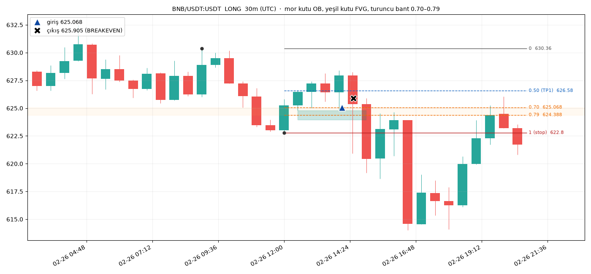
| Sembol (TradingView) | DOGEUSDT BingX perpetual |
|---|---|
| Zaman dilimi | zone 30m · giriş/çıkış 1m |
| Giriş | 2025-09-14 03:16 UTC · 2025-09-14 06:16 TR · 0.287973 |
| Çıkış | 2025-09-14 11:19 UTC · 2025-09-14 14:19 TR · 0.287692 · BREAKEVEN |
| Sonuç | +0.29 R · fiyat -0.10% · net +15.03 $ (10.000 $ hesap) |
| Çapalar | 0: 0.30485 (2025-09-13 15:00 UTC) · 1: 0.28074 (2025-09-13 17:00 UTC) |
| Fib | 0.50: 0.292795 · 0.70: 0.287973 · 0.79: 0.285803 |
| Girişte bantta |
|
| Zone | 7949f9f63ccb53c89b56793bd2032f7e |
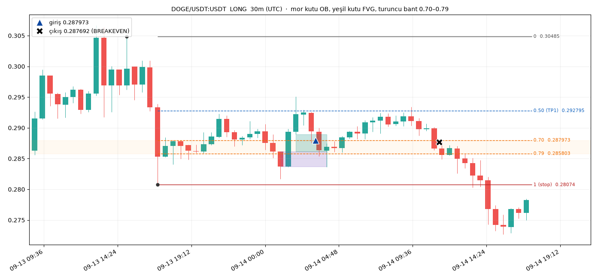
| Sembol (TradingView) | JUPUSDT BingX perpetual |
|---|---|
| Zaman dilimi | zone 30m · giriş/çıkış 1m |
| Giriş | 2025-08-10 10:24 UTC · 2025-08-10 13:24 TR · 0.51365 |
| Çıkış | 2025-08-10 18:15 UTC · 2025-08-10 21:15 TR · 0.5329 · FINAL_TP |
| Sonuç | +1.47 R · fiyat +3.75% · net +58.43 $ (10.000 $ hesap) |
| Çapalar | 0: 0.5329 (2025-08-10 07:00 UTC) · 1: 0.5054 (2025-08-10 08:00 UTC) |
| Fib | 0.50: 0.51915 · 0.70: 0.51365 · 0.79: 0.511175 |
| Girişte bantta |
|
| Zone | 3325bfb418ee547ea8ec2ea3c03871c7 |
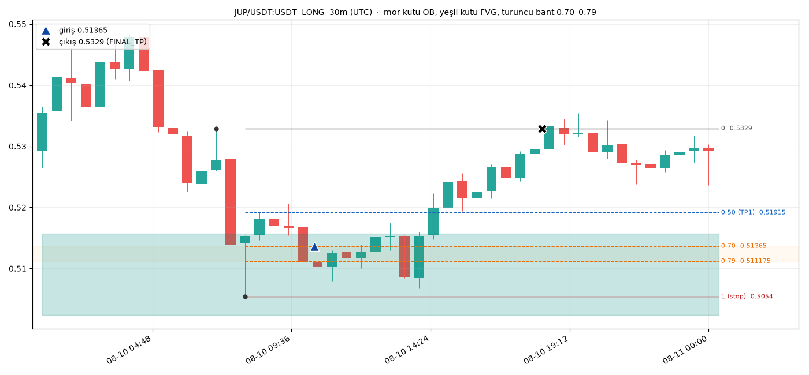
| Sembol (TradingView) | AAVEUSDT BingX perpetual |
|---|---|
| Zaman dilimi | zone 30m · giriş/çıkış 1m |
| Giriş | 2026-05-03 13:42 UTC · 2026-05-03 16:42 TR · 92.392 |
| Çıkış | 2026-05-03 15:39 UTC · 2026-05-03 18:39 TR · 92.4215 · BREAKEVEN |
| Sonuç | +0.28 R · fiyat +0.03% · net +0.72 $ (10.000 $ hesap) |
| Çapalar | 0: 93.89 (2026-05-02 21:30 UTC) · 1: 91.75 (2026-05-03 02:00 UTC) |
| Fib | 0.50: 92.82 · 0.70: 92.392 · 0.79: 92.1994 |
| Girişte bantta |
|
| Zone | 2d797fe20bb852a1bdfd1a80afeefd12 |
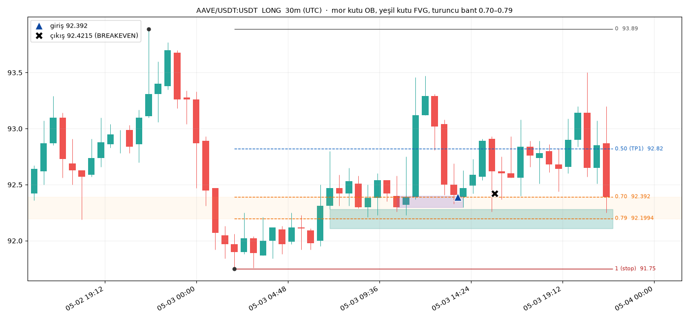